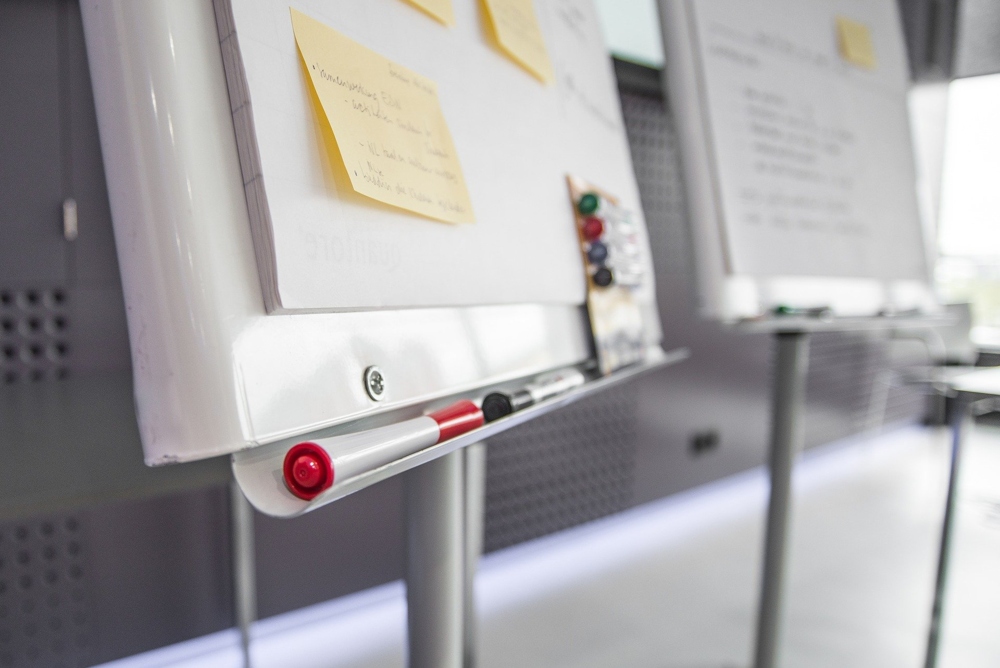

Halo! Aku Agnes Juliana. Putri asli “perbatasan” Blitar yang sedang merantau ke Malang untuk menimba
ilmu di Almamater tercinta, SMK Telkom Malang. Terlahir sebagai anak tunggal dari keluarga sederhana
yang bahagia.
Aku bukan termasuk anak yang aktif berorganisasi saat SMK ini. Bukan karena malas, tapi aku punya
pandangan sendiri mengenai belajar bersosialisasi. Mungkin pandanganku yang berbeda itulah yang
menyebabkanku agak kesulitan diawal ketika bertemu dengan orang baru. Kalau kata ibuku aku terlalu
pilih-pilih untuk membangun komunikasi dengan orang lain. Kuakui itu.
Karena aku tak terikat oleh organisasi di sekolah, aku jadi bisa lebih fokus untuk mengerti diriku.
Mencoba hal-hal baru yang kusuka, mengembangkan skill dan menikmati hidup. Seperti saat ini aku sedang
mencoba berinvestasi dan memulai bisnis kecil-kecilanku. Aku menyukainya.
|  |
Bukan berarti tak mengikuti organisasi sekolah membuatku serta merta tak peduli tentang cara bekerja
tim. Aku juga orang yang berpedoman pada pepatah |
“berjalan bersama membuatmu melangkah lebih jauh”. Maka dari itu,aku berlatih kerja tim dengan mengikuti berbagai kompetisi. Aku tahu, sebenarnya ini tidak
cukup. Tapi ini adalah langkah awal yang baik bukan, bagi penentang system senioritas sepertiku untuk
belajar bekerja tim?
|
|
Semua ini tentang pilihan. No matter what they say, no matter what they do. Hidup bukan tentang “omongan
orang”. Tetap fokus dan optimis dengan segala yang kamu lakukan. Karena pada akhirnya masa depanmu
ditentukan oleh pilihanmu sendiri. |
Sumber Gambar: Pixabay